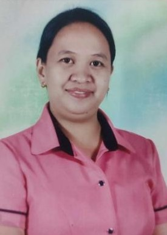

NEW FACES
Rolly D. Limos
"No matter how hard it is or how hard it gets, I'm going to make it.” This quotation by Les Brown is what Sir Rolly Limos valued the most "This is what I keep telling myself everytime I am struggling and exhausted. Because I believe that after all of my sacrifices, I will reach my dream."–Sir Limos
Angel Jean S. Jarabejo
"Let go, and let God"-Ma'am Angel
Erika M. Taguinin
"Small but I can do big things"-Ma'am Erika

Marimark A. Vallejos
"I never contemplate abandoning my dreams since I aim to assist my family and contribute to our community’s betterment especially when it comes to our youth."-Ma’am Vallejos
ANONG KWENTONG ASIA PACIFIC MO?
“Ang kwentong Asia Pacific ‘ko ay sobrang napakasaya, kasi my bago akong mga nakilala na sobrang saya kasama at iyon ang aking mga klasmeyts at ang mga guro na mababait. Dito ay marami kang matutunan at may kakayahan kang maipakita ang iyong talent. Sana, magkaroon pa ako ng masayang memories dito sa Asia.” – April V, 11 GAS
“Dati ay wala akong balak mag-aral dito, pero inaya ako ng mga ate at pinsan ko. Maganda pala mag-Asia dahil ka rin sa attitude at respeto, especially ‘yung bago mag-start ‘yung flag raising…may praise and worship pa. Ang sarap sa pakiramdam na ‘di ka lang natututo para mag-aral, kundi matututunan mo din na mahalin ang Diyos, dahil ang iba ay nakakalimutan na nila Siya.” – Aub, 11 TVL-HE
“Sa Asia Pacific ako malayang nakakapagsuot ng pambabae at pinayagang magsuot ng uniform ng pambabae.” – Ariana Grande, 11 HUMSS
“Being a student here in Asia is good, because they’re not only focusing on the academic excellence of every student but also on the attitude of a student. Sabi nga, kahit gaano ka katalino kung ang pangit din ng ugali mo, wala din.” – Cheese, 12 ABM
“Sa Asia, madami akong naging kaibigan at nang dahil sa kanila, naramdaman kong maging masaya.”– Vien, 12 STEM
“Dahil sa asia naranasan ko masali sa honors na hindi ko naranasan nung JHS, naranasan ko den makipag compete sumali sa sports.” – Ace, 12 TVL-ICT
“Dito sa Asia, natuto akong mag-aral ng mabuti. Sa Asia, dito ako nagkaroon ng mga kaibigan. Dito, nagkaroon ako ng self-confidence.” – Enimsaj 1518, 12 TVL-IA
“Simula nung nag-aral ako sa APCBA, nakakilala ako ng mababait, gwapo at magagandang teachers, at siyempre, nakilala ko rin ang pinakamagandang kaibigan at maaasahan sa lahat. Sa school na rin na ito mas na-developed ‘ko ang aking kakayanan tulad ng paglalaro ng volleyball. Nagkaroon ako ng confidence na maglaro dahil sa paghikayat ng kaibigan ko. Mahiyain kasi ako pagdating sa ganyang sports pero sobrang saya dahil mas marami pa ako nakilalang estudyante ng APCBA. Kaya proud ako na isa akong Asianite!” – Alex, 12 GAS